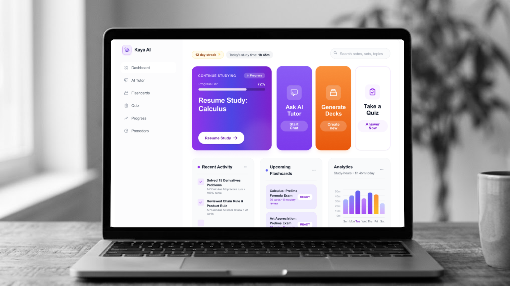

Time Frame
1 Week
Case study / 01
A study buddy that brings flashcards, practice quizzes, a focus timer, and an AI tutor into one simple workspace.

View Figma PrototypeOverview
Have you ever found studying challenging? Kaya AI is designed to help you make the most of your study time and create a more effective learning experience.
Time Frame
1 Week
My Role
UI/UX Design, Visual Design, User Flow, Prototyping
Tools
Figma
01 / The problem
Some students struggle to stay focused, get overwhelmed by too many tasks, or find it hard to understand lessons on their own. For students with ADHD or other learning disabilities, keeping up with schoolwork can be even more challenging. Most study tools offer the same experience to everyone, even when students have different needs.
02 / The goal
My goal was to bring flashcards, AI quizzes, and a study tutor together in one workspace where everything works hand in hand. I wanted students to move easily from learning a lesson to practicing what they've learned, while staying focused and motivated. With all the tools in one place, studying can feel more organized, rewarding, and easier to keep up with.
03 / The design solution
Kaya AI is designed around a simple dashboard that gives students a clear view of their study activities. Each tool has its own space, from chatting with the AI tutor to reviewing flashcards and taking quizzes. The sidebar makes it easy to move between features, while the pinned focus timer stays visible during study sessions.
04 / Key features
Shows study progress and lets students resume their lessons.
Helps students understand difficult topics through hints and simple explanations.
Helps students review and remember important information.
Lets students test their knowledge and identify topics they need to review.
Helps students manage their study time without leaving the page.
05 / Design process
I focused on creating a simple layout with clear navigation, readable text, and easy-to-recognize buttons. I used a white and purple color palette to give the interface a clean, modern, and friendly feel.
06 / Reflection
Designing Kaya AI helped me understand that good UI/UX design is more than making an interface look good. It's about understanding what users need and making their tasks easier. With Kaya AI, I wanted to make studying feel more organized, accessible, and less overwhelming.